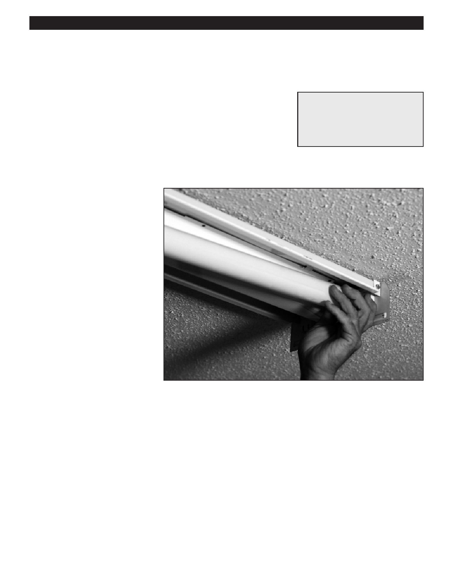

PA RT I C I PA N T R E S O U R C E G U I D E
Replacing a Fluorescent Tube
It’s quick and easy to replace a fluorescent tube. Here’s how to do it.
Safety
Tools and Materials Needed
Make sure the power is off before you replace the tube.
Replacement fluorescent tube
Use lockout/tagout procedures.
Lockout/tagout device
Wear eye protection and rubber-soled shoes. Remove jewelry.
Fiberglass ladder (if needed)
Be careful using a ladder.
Support the parts of the fixture as you remove them. Don’t let any parts on fall
on you.
How-to Steps
1. Turn off power to the circuit.
2. Remove the shade/diffuser.
3. Twist the tube until it unseats from
the sockets. (Bad tubes are often
black on the ends.)
4. Put in a new tube and twist until it
is seated in sockets at both ends.
(Make sure tube does not exceed
wattage rating of fixture.)
5. Put shade/diffuser back on.
6. Restore power to circuit and turn
on light to make sure it works.
Notes:
67